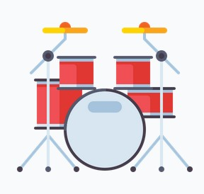

The drum is a member of the percussion group of musical instruments.
Drums consist of at least one membrane, called a drumhead, that is
stretched over a shell and usually a resonant head on the underside of the
drum.
Drums may be played individually, with the player using a single drum, and
some drums such as the djembe
are almost always played in this way.
Others are normally played in a set of two or more, all played by the one
player, such as bongo drums
and timpani.
A number of different drums together with cymbals form the basic modern
drum kit.
